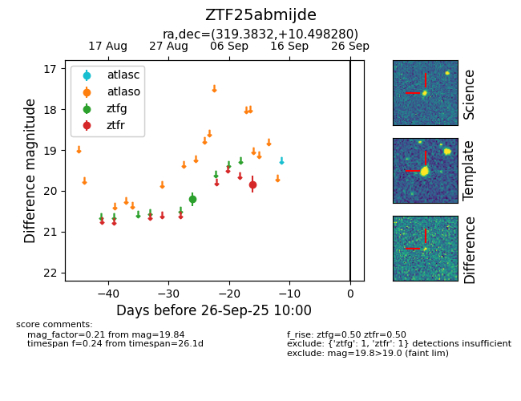

FINK: ZTF25abmijde
Lasair: ZTF25abmijde
ALeRCE: ZTF25abmijde
ZTF25abmijde (ztf,fink)
equatorial (ra, dec) = (319.3832,+10.49828)
galactic (l, b) = (61.4307,-25.95925)

last ztfg=20.20, ztfr=19.84
1 ztfg, 1 ztfr detections